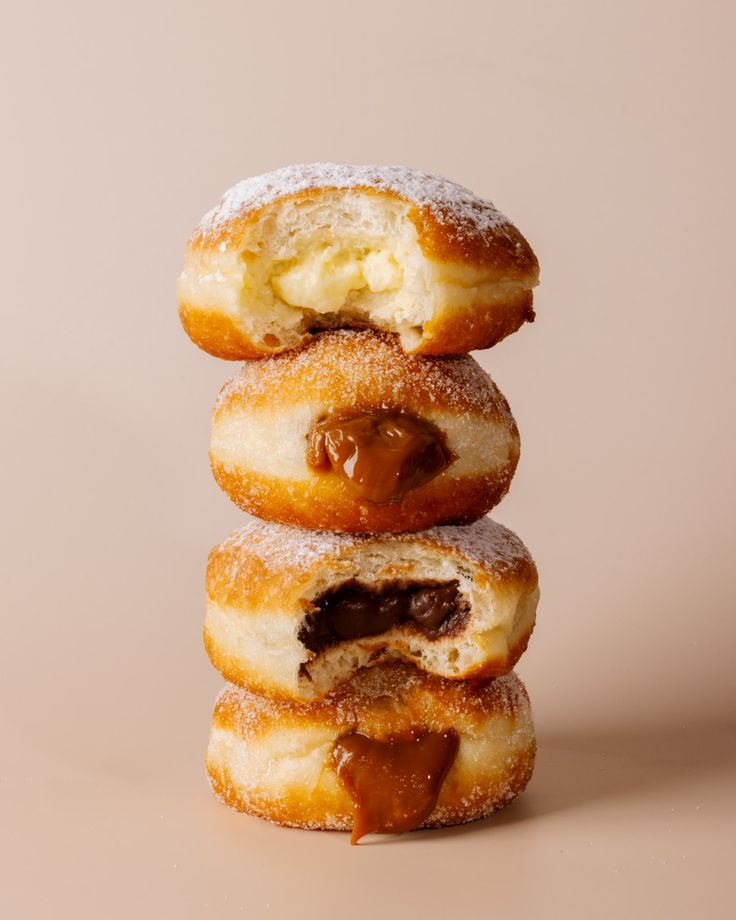

HAZ TU PEDIDO SIN COMPLICACIONES
Tu pedido se prepara con tiempo y se disfruta mejor.
Trabajamos por preventa para organizar cada horneada, conservar la frescura y confirmar contigo todos los detalles antes de entregar.

PASOS PARA PEDIR
Elige tus piezas
Revisa el menú y guarda los panes, croissants, postres o bebidas que quieras probar.
Cuéntanos tu idea
Escríbenos qué deseas, cuántas piezas necesitas y si será para entrega, recolección o una ocasión especial.
Recibe tu confirmación
Te compartimos disponibilidad, total, fecha, horario y el punto acordado para que todo llegue claro.
De la cocina a tu mesa
Cada pedido comienza con tiempo de preparación y horneado. Elige tus favoritos y consulta la próxima preventa.
Antes de escribirnos
La preventa abre de lunes a miércoles. El jueves confirmamos los pedidos y los viernes o sábados realizamos entregas y recolecciones.
Podemos entregar en Roma Norte y alrededores según la ruta de la semana. También puedes recoger tus piezas en el punto que confirmemos contigo.
Los sabores especiales cambian, los pasteles personalizados necesitan más tiempo y los cambios se revisan con anticipación para cuidar tu pedido.
Calendario de preventa
Organiza tu pedido con estos tiempos.
- Lunes a miércoles: selecciona tus productos.
- Jueves: revisamos y confirmamos disponibilidad.
- Viernes y sábado: entregas y recolecciones.
En fechas especiales, las preventas pueden abrir antes.
Entrega o recolección
Indícanos tu zona desde el inicio para revisar si entra en la ruta disponible.
Si prefieres recoger, te compartimos el horario y el punto de encuentro al confirmar.
Pedidos especiales
- Pasteles: indica tamaño y número de personas.
- Regalos: pregunta por combinaciones de piezas.
- Eventos: solicita disponibilidad con varios días de anticipación.
Datos para preparar tu solicitud
Estos campos son una guía para que tengas clara la información que necesitaremos al momento de escribirnos.
¿Ya sabes qué se te antoja?
Ve a contacto, elige cómo quieres que te respondamos y cuéntanos qué productos te gustaría apartar.
Tres momentos de tu pedido
Elige con tiempo
Revisa el menú entre lunes y miércoles para encontrar más opciones disponibles.
Confirma tu zona
Indícanos si quieres entrega o recolección para revisar la ruta semanal.
Recibe con claridad
Te compartimos fecha, horario y total antes de preparar tus piezas.
Información para una preventa clara
Qué quieres pedir
Escribe el nombre de las piezas, sabores y cantidades que te gustaría apartar.
Para cuándo
Indica la fecha que necesitas, sobre todo si buscas un pastel o varias cajas.
Dónde recibirlo
Comparte tu colonia si quieres entrega o avísanos si prefieres recolección.
Cómo responderte
Déjanos tu contacto preferido para confirmar disponibilidad, total y horario.
Fechas y entregas
Así avanza tu pedido
Selección de piezas
Confirmación y entrega